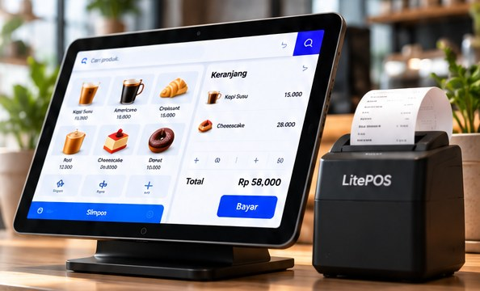

Aplikasi kasir modern untuk UMKM
Kelola penjualan, stok, dan laporan usahamu dalam satu sistem. Mulai gratis, upgrade saat usahamu berkembang.

Fitur utama
Semua yang dibutuhkan untuk menjalankan kasir harian.
Kasir & Transaksi
Catat penjualan dalam hitungan detik dan cetak struk.
Manajemen Stok
Atur produk, harga, kategori, dan pantau stok.
Laporan Lengkap
Pantau omzet dan penjualan, dari harian hingga real-time.
Kelola Pelanggan
Simpan data pelanggan untuk melayani lebih baik.
Website Katalog
Katalog produk online dengan stok real-time (paket Online).
Payment Gateway
Terima pembayaran digital terintegrasi (paket Online Pro).
Tentang LitePOS
LitePOS dikembangkan untuk membantu UMKM di Indonesia beralih dari pencatatan manual ke kasir digital dengan biaya terjangkau.
[ISI: nama usaha/badan hukum, kota, dan cerita singkat tim]